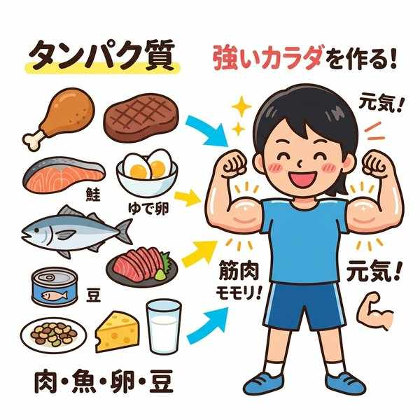
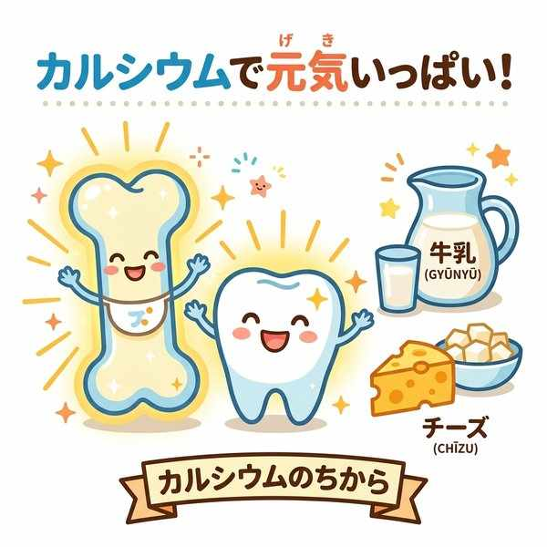
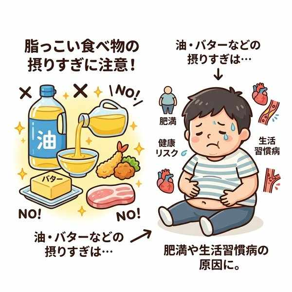
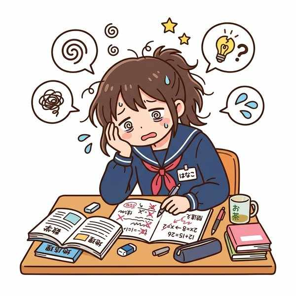

単元1: 健康の成り立ちと生活習慣
健康は、私たちの身体的な状態だけでなく、心の状態や取り巻く環境と深く関わっています。この単元では、健康に影響を与える「要因」の分類と、食事や休養・運動などの「生活習慣」が健康に与える影響について整理します。テストによく出るキーワードを押さえましょう！
1. 病気の要因：主体要因と環境要因
病気や健康状態に関係する要因は、大きく分けて本人の身体に関係する「主体要因」と、本人の周囲の状態に関係する「環境要因」の2つがあります。
| 要因の分類 | 具体的な内容 | 定期テストのポイント |
|---|---|---|
| 主体要因 （個人の要因） |
年齢、性別、体質、病気への抵抗力、遺伝的な体質、免疫力など | 個人の身体的な特徴や性質を「素因（そいん）」ともいいます。その人自身が持つ要因です。 |
| 環境要因 （周囲の要因） |
・物理的化学的環境：気温、湿度、有害化学物質など ・生物学的環境：細菌、ウイルス、カビなど 調・社会的環境：人間関係、保健・医療制度、労働環境、社会保障など |
環境要因はさらに3つに分類されます。特に「細菌やウイルス」は生物学的環境、「医療制度や人間関係」は社会的環境である点が出題されます。 |
2. 運動習慣と健康
現代社会では、生活の便利化に伴って運動不足になりやすく、これがさまざまな生活習慣病（糖尿病や肥満など）を引き起こす大きな原因となっています。
- 適度な運動の効果：骨や筋肉が発達する、心肺機能（肺活量や心臓の1回拍出量）が向上する、ストレス解消になるなど。（※「免疫力が完全に固定される（変わらなくなる）」というのは誤りです）
- 運動の進め方：個人の生活環境や年齢に合わせて、運動の種類や強さに加え、行う時間（頻度）を決めて計画的に行うことが大切です。
3. 食事・栄養と健康
食事は、私たちの体を作り、活動するためのエネルギー源となる重要な生活習慣です。食物から取り入れる成分を栄養素（えいようそ）と呼び、過不足によって健康に以下のような影響が出ます。
| 栄養素 | 不足した場合の影響 | 過剰摂取（とりすぎ）の影響 |
|---|---|---|
| たんぱく質 | 体力低下や筋肉量の減少 | （過剰摂取は腎臓の負担等に繋がることがあります） |
| カルシウム | 骨や歯の発育不良、骨粗しょう症 | ー |
| 脂肪（脂質） | ー | 肥満や動脈硬化などの生活習慣病 |
| ナトリウム（食塩） | ー | 高血圧などの原因 |
※生命を維持するために（心臓を動かす、体温を保つなど）最小限必要なエネルギーの消費量を、基礎代謝量（きそたいしゃりょう）といいます。これは年齢や性別によって異なります。

筋肉や血液をつくるたんぱく質

骨や歯をつくるカルシウム

過剰摂取は肥満につながる脂肪
4. 疲労の蓄積と睡眠・休養
勉強や運動、作業などを長時間続けると、頭がぼんやりしたり、ミスが多くなったりする疲労（ひろう）が起こります。
- 疲労の影響：疲労がたまると、病気に対する抵抗力が低下し、集中力が下がって重大な事故を招く危険があります。また、疲労は体の変化だけでなく、イライラするなどの心の変化（心の健康の阻害）としても現れます。
- 効果的な休養（睡眠）：心身の疲労を回復させるために、最も効果的な休養の取り方は、十分な睡眠をとることです。
- 積極的休養（アクティブレスト）：ただ体を休めて眠るだけでなく、ストレッチや軽い散歩などで適度に体を動かし、血液の循環を良くすることで疲労回復を早める休養法を積極的休養（アクティブレスト）といいます。

疲労の蓄積による影響
最も効果的な休養である十分な睡眠
🔥 定期テスト対策・暗記のコツ
① 主体要因と環境要因の見分け
「本人の体の特徴（年齢・性別・体質・遺伝・免疫）＝主体」「本人の外側（気温・ウイルス・医療制度）＝環境」です。「ウイルスは生物学的環境」「人間関係や医療制度は社会的環境」である点も超頻出です。
② 栄養素と過不足の組み合わせ
「カルシウムの不足 ➔ 骨や歯の発育不良」「たんぱく質の不足 ➔ 筋肉量減少・体力低下」「食塩（ナトリウム）のとりすぎ ➔ 高血圧」「脂肪のとりすぎ ➔ 肥満・動脈硬化」の対応を完璧にしましょう。
③ 疲労回復の切り札「アクティブレスト」
テストの記述問題で「軽く体を動かすことで血流を促し、疲労物質の排出を早める休養法」を問われたら、漢字で「積極的休養」、または「アクティブレスト」と答えます。